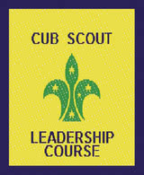
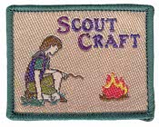
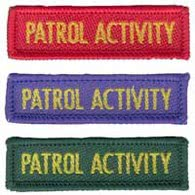
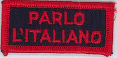
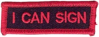

Multiple Section Badges and others
Camper Award Badge


(Joeys / Cubs / Scouts)
The Camper Award Badge depicts the total number of nights spent camping while on approved Scouting activities. (School camps and family holidays don't count.) They may be worn above the pocket of the uniform below the World Badge.
The requirements for the badge can be started at the Joey Scout level and continue to be added through to the Rover Scout section. The number of nights camped can be recorded on Scout Central. Some Record Books also have space to record camps.
- Each youth member should commence and maintain their personal log which details the number of nights spent camping and distance covered in hiking/canoeing etc.
- This is an ongoing tally that progresses through all Sections. When a youth member links to the next section, they just keep adding the nights to their log.
- Approval for the badge is via the method of approval for other badges for the section e.g. Leader for Joey Scouts and Cub Scouts or Troop, Unit and Crew Council.
- When a new badge is earned, it replaces the previous badge. Only one badge is to be worn at a time. Once you have reached the maximum number of nights on the highest badge we have, you keep wearing that badge.
Walkabout Award Badge


(Joeys / Cubs / Scouts)
The Walkabout Award Badge is earned for the total kilometres travelled under human power through a youth member's time in Scouting. The minimum distance to be counted toward the tally for Joey Scouts and Cub Scouts is 1km while it is 5kms for all others. Journeys taken in a canoe, kayak, skis or a bicycle are divided by 2 e.g. a 20 km bike hike earns 10 km to the Award. Day and overnight journeys provided they are over the minimum distance for the section, may be included for the Award. The badge may be worn above the pocket of the uniform below the World Badge.
The requirements for the badge can be started at the Joey Scout level and continue to be added through to the Rover Scout section. These can be recorded on the Scout Central register sheet by your leaders. Some Record Books also have a personal log section.
- Each youth member should commence and maintain their personal log which details the number of nights spent camping and distance covered in hiking/canoeing etc.
- This is an ongoing tally that progresses through all sections. When a youth member links to the next section, they just keep adding the nights to their log.
- Approval for the badge is via the method of approval for other badges for the section e.g. Leader for Joey Scouts and Cub Scouts or Troop, Unit and Crew Council.
- When a new badge is earned, it replaces the previous badge. Only one badge is to be worn at a time. Once you have reached the highest number of kilometres that we have a badge for, you keep wearing that badge.
Cub Scout Leadership Course Badge
(Cubs)
This National Course provides training for current and potential Sixers and Seconds and is run in your Branch according to your Branch structure and guidelines. In order for you to attend the Cub Scout Leadership Course you must be nominated by your Cub Scout Leader.
The aim of this course is to provide suitable leadership skills, using a practical approach, for Cub Scouts who may be appointed to leadership roles within their Cub Scout Packs.
Sessions include such things as:
- Leadership
- Problem solving
- Challenges
- Pack Councils
Scout Leadership Course Badge
(Scouts)
The Scout Leadership course is run within your Branch according to your Branch structure and guidelines. You are encouraged to participate in the Scout Leadership Course soon after you gain your Pioneer Badge.
The aim of this course is to provide suitable leadership skills for Scouts, utilising a practical ‘hands on’ approach. The course is organised and run on the Patrol System and provides all participants with the opportunity to chair a meeting.
Sessions include:
- Understanding the Patrol System and the Scout Award Scheme
- Leadership
- Problem Solving and Task Management
- Citizenship
- Planning/Programming
Scoutcraft Badge
(Scouts)
The Scoutcraft Badge is the FIRST badge completed by EVERY new Scout.
The Scoutcraft Badge is earned within four to six weeks of you joining the Troop. Your Patrol Leader and Scout Leader work together to carry out the training and testing for this badge.
The requirements for the Scoutcraft Badge are:
(With your Patrol, complete the following)
- Learn and be able to demonstrate the following knots:
- reef knot
- clove hitch
- sheet bend
- rolling hitch
- Flag
- Describe the Australian flag.
- Hoist and break the flag.
- Explain the correct use of the flag.
- First aid
- Know how to report an emergency.
- Know the first steps to control bleeding.
- Safety with camping tools
- Know the laws of carrying and use of knives in your state or territory.
- Know and understand the safety rules for the use and storage of knives, bush saws and axes.
- Explain the rules that apply to the supply and use of firewood in camping areas in your state or territory.
- Demonstrate the use of a pocket knife or multi-tool.
- Patrol System
- Discuss with your Patrol Leader the requirements of the Pioneer Target or other appropriate Target of the Award Scheme.
- Discuss with your Patrol Leader how the Patrol system works in your Troop, e.g. election of Patrol Leader, appointment of APL, responsibilities of Troop Council and how it works.
- Show an understanding of how a Patrol works within the Troop
Patrol Activity Badge
(Scouts)
The Patrol Activity Badge is an important part of the Award Scheme. You and your Patrol or Activity Patrol are given a wide choice of interests and skills to pursue in small group activities. These activities are organised and run by you with a minimum of adult involvement.
You are required to earn one Patrol Activity Badge for each of the Target levels in order to earn your Cord for that level. While you may earn as many Patrol Activity Badges as you wish, only one for each level is worn on your uniform.
Guidelines for achieving the Patrol Activity Badges:
- The Patrol decides on their own activity.
- The Troop Council sets the standards and decides when the Patrol activity has been achieved.
- The badge should involve a minimum of eight hours activity for each Patrol member.
- The badge can be undertaken by either an existing Patrol or Activity Patrol.
- At least four and not more than eight Scouts can work on one Patrol Activity Badge activity.
- An activity may count towards both a Patrol Activity Badge and Target or Proficiency Badge.
The Guidelines for Scout Leaders and the Scout Award Scheme provides examples of appropriate activities that will meet the standard required. Read through the suggestions and use one of them or, with your Patrol members, develop you own to present to the Troop Council for consideration.
Australian Scout Medallion

(Scouts)
The Australian Scout Medallion is the highest award you can earn in the Scout Section. It is considered the pinnacle of your Scouting at this stage and is a milestone in your Scouting life.
To achieve the Australian Scout Medallion you will need to:
- Participate in a Scout Leadership Course at any time while doing the Explorer or Adventurer Level Badge.
- Been awarded an Adventurer Level Cord with specific reference to the Adventurer Level Journey.
- Demonstrate an active leadership role in Scouting through a Leadership Activity.

Local History Badge
(Cubs)
Our local history is important and this is an opportunity to learn more about it. Through this badge you will learn more about your own community and Australian history and how Scouting has played a part in this history.
The badge may be completed as a Pack Project or earned individually. If you are attempting this badge on your own, do not hesitate to ask your Cub Scout Leader or your parents for assistance.
Requirements:
- Chart the history of your Scout Group
or
- List in order 10 milestones in Scouting, starting with the beginning of the Movement.
And complete two of the following:
- Visit a local Museum, Historical Society or a Scout Museum/Heritage Centre and:
- Complete a worksheet on the contents (this to be arranged beforehand with the person in charge or Leaders visiting the centre and compiling their own worksheet)
or
- Give a talk to the Pack on your visit and describe some item from 50 years ago.
- Meet a local senior citizen, learn the history of the local area and present this history to the Pack.
- Visit historical landmarks in your town (memorials, buildings) and list information as to their origin.
- Research the history of the school you attend, and either write a short story or give a short talk on it.
And
- Through an Internet website or public library, research the history of a major Australian historical event and present you findings to the Pack.
Language Emblem
(Cubs / Scouts)
In a foreign language that you have selected:
- Carry on a conversation for ten minutes.
- Write a letter of at least 100 words to the examiner.
- Translate in your own time, and with the help of a dictionary, an easy passage from a book or magazine.
Language Emblem (Deaf Sign)
(Scouts)
You may qualify to wear a Deaf Sign Language emblem by passing the approved tests (using AUSLAN, the Australian deaf sign language or the Paget Gorman sign system) for communicating with the deaf or language disabled. The qualifying tests are:
- Carry out a conversation for about 15 minutes with a deaf person, using a Scouting topic.
- Demonstrate the ability to use finger spelling and the number system, both sending and receiving.
- Interpret from a previously unsighted passage from a book or periodical. The subject material should preferably be on a Scouting theme.
Amateur Radio Operator Badge
(Scouts)
A member of Scouts Australia who obtains a Radio Operators Licence, in accordance with Government regulations, may wear the Amateur Radio Operator Badge on the right sleeve of the uniform.
The Australian Communications and Media Authority, subject to examination or equivalent acceptable qualifications, issues licences as set out in the current Amateur Licence Information Paper. Each grade of licence allows specific privileges of use of the electronic spectrum regarding frequencies and power limitations. There are no minimum age requirements. The latest qualifications and conditions can be found at www.acma.gov.au
The badge is a gold diamond with a green band across the centre and is issued on the authorisation of the Branch Jamboree On The Air Co-ordinator and a register is kept at Branch of their issue.
Landcare Badge
(Joeys / Cubs / Scouts)
Landcare projects can take place in any community, and there has been a strong incentive for Scout Groups to work with their local community in tackling important local projects, such as care for bushland, dunes and creeks etc. The Landcare badge is designed to encourage youth members from all sections to participate in local Landcare projects.
Requirements:
- Participate in any three Nationally-accredited environment events either supported or run by Landcare Australia (such as Landcare Week, Planet Ark's Tree Day, Keep Australia Beautiful and Clean Up Australia).
or
- If you are a member of a Landcare group, provide evidence of regular attendance as a Landcare volunteer.
You will need to spend at least 10 hours participating in either of the above requirements in total (note - not 10 hours per event). This must be completed within a 12 month period.
Their Service, Our Heritage Badge

(Joeys / Cubs / Scouts)
This Award was introduced in the year 2000 for all members of Scouts Australia, with the intention of raising the level of awareness of youth members about our Veterans and providing Scout members with an opportunity to actively participate in the 'Their Service, Our Heritage' program.
This is an annual award and is achieved each year with the year commencing on 25th April. The badge will have a different coloured edging each year.
Participate in two activities relevant to 'Their Service, Our Heritage'
Suggestions:
- Take part in an ANZAC day march or ceremony
- Take part in Rememberance Day
- Invite a Veteran to your meeting to talk to you
- Visit a Veterans Home or the local RSL
- Maintain your local Memorial
- Visit a Tomb of the Unknown Soldier
Waterwise Badge

(Cubs)
To Become a Waterwise Cub Scout, complete any six of the following 'Waterwise' activities. These may be done as a Pack, a small group or individually. If you do them individually you need to report, in any form you choose, to your Pack on what you have learnt.
Discovery
- Conduct simple experiments to show your understanding of two of the following: capillary action, surface tension, the density of salt water, how oil floats on water, how a submarine works or similar.
Conservation
- Use your water meter to find out how much water your family uses in a week. Discuss with your family how you could reduce this amount.
- Design and make a fridge magnet to display a water saving message to your family.
Protecting Our Wetlands
- Find out how the things we put down our drains effect our rivers, streams and wetlands.
- Design a poster to show what we can do to help protect our wetlands OR make up an environmentally friendly cleaning kit using everyday items such as vinegar, bicarbonate of soda, lemon juice etc. Include instructions on how to use these products.
Health
- Water is vital to our health. Find out what happens to our bodies if we don't have enough water or if our water is not clean. Tell your Six or Pack what you have learnt.
Water and the Natural Environment
- Choose a way to show that you understand the water cycle and the three forms water can take: solid, liquid and gas.
Community
- Perform a community service such as helping to re-establish a wetland, planting low water-use shrubs or similar. Contact an environmental group to see what you can do to help your community.
Global Community
- 1.1 billion people in the world do not have access to clean water. List six countries where there is not enough clean water and the names of two groups working to help these countries. Find out if there is anything your family or your Pack can do to help.
Games
- With your Pack participate in a quiz or a Wide Game with a water theme.
Expedition
- With your family or your Pack visit a dam or water catchment area. Find out what area it supplies with water and any other interesting facts you can. Tell your Six or Pack what you have learnt. You might like to take some photos to help you explain.
Home Environment
- At home or at your Scout Hall help to build a frog friendly garden, plant some native shrubs or ground covers or similar. If you do this activity at home bring a note from a parent.
World Scout Environment Badge

(Joeys / Cubs / Scouts)
This is a badge from the World Scout Environment Program which helps Scouts around the world work together for the good of the local and global environment.
Requirements:
A - Explore and Reflect
Complete activities based on each of the five aims:
- People and natural systems have clean water and clean air.
- Explore the sources of clean water and clean air in the local environment.
- Understand the ways water and air are naturally cleaned.
- Sufficient natural habitat exist to support native species.
- Explore a local natural area.
- Discover some of the local native species of plants and animals and their habitat needs.
- Demonstrate knowledge of some contrasting natural habitats.
- The risk of harmful substances to people and the environment are minimised.
- Be aware of harmful substances in the local environment.
- Explain ways to reduce the risk of harmful substances to people, plants and animals.
- The most suitable environmental practices are used.
- Show awareness of how our actions affect the environment and alternative ways to make a smaller impact.
- People are prepared to respond to environmental hazards and natural disasters.
- Be able to recognise different types of environmental hazards and natural disasters.
- Demonstrate how to be prepared and react to environmental hazards and natural disasters in the local area.
B - Take Action
Complete an environmental project that relates to the previous learning and to the local environment.
- Participate in a local environment project.
- Understand the benefits to the local environment of the project.
- Be aware of the local to global link of the project.
- Share your findings with your Six or Pack.
The WSEB currently doesn't link to other areas of the Cub Scout Award Scheme. Completion of the WSEB should take a minimum of 10 hours.
First Aid Badge
(Scouts)
While an individual's qualifications remain valid, the relevant Association's First Aid Badge may be worn at the bottom of the right sleeve on the uniform. This applies to all Scouts who hold a current First Aid qualification from any approved provider, to current Australian Resuscitation Council standards.
The armlets of the St John Ambulance Association, the St John Ambulance Brigade and the Red Cross Society may be worn on the left sleeve while serving with one of these bodies.
The cloth badge of the Royal Life Saving Society may be worn on the right sleeve of the uniform.
Faith Awareness Badge

Cub Scout
Requirements:
- Know and explain the basic principles of your religion or a religion of your choice to your Adviser by:
- discussion
- completing a project such as a scrapbook or poster.
- Participate regularly for at least three months in religious services of your choice.
- Know and explain why we use prayer. Make up a simple prayer for use at home, at one of your Pack meetings or at Scout's Own.
- Learn about one other religion of your choice and discuss it with your Adviser (and the Pack if you wish).
or
Scout

Youth members of the Scout Section are eligible to earn and wear the Faith Awareness Badge. The badge has a green background with black and white figures and may be earned at any time whilst in the Scout Section.
Badge Adviser:
The Badge Adviser will be called a Religious Adviser. The Religious Adviser may be a Minister of Religion, Priest, Rabbi, Lay Helper or religious equivalent. A Religious Adviser of the Scout's choice should test the badge.
Requirements:
- Know and explain the basic principles of your religion or a religion of your choice to your Adviser by discussion or completing a project, such as a scrapbook or poster.
- Participate regularly for at least three months in religious services of your choice.
- Know and explain why we use prayer. Make up a simple prayer for use at home, at one of your Scout meetings or at Scout's Own.
- Learn about one other religion of your choice and discuss it with your Adviser (and the Scout Troop if you wish).
Messengers of Peace
Joey Scout
Joey Scouts do good turns and help others because it is part of the Joey Scout Promise and Law. It is nice to help others, even if it is only a small action. Whenever we are kind to people we send a message of love and peace, making a difference to the others and also ourselves.
Requirements:
- Learn about the Messengers of Peace initiative in a Scout meeting or online.
- Participate in a good turn for your community
Cub Scout
Cub Scouts do good turns and help others because it is part of the Cub Scout Promise and Law. It is also because it is nice to help others and to make a difference, even if it is only a small action. Whenever we are kind to people we send a message of love and peace, making a difference to the recipients and also ourselves. It just feels good.
Requirements:
- Learn about the Messengers of Peace initiative in a Scout meeting or online.
- Participate in a Messengers of Peace community engagement activity organised in your Six.
- Share your actions online with the help of an adult at scout.org
Scout
Scouts do good turns and help others because it is part of the Scout Promise and Law. It is also because it is nice to help others and to make a difference, even if it is only a small action. Whenever we are kind to people we send a message of love and peace, making a difference to the recipients and also ourselves. It just feels good.
Requirements:
- Learn about the Messengers of Peace initiative in a Scout meeting or online.
- Participate in a community involvement action organised together with your Patrol.
- Share your actions online at scout.org